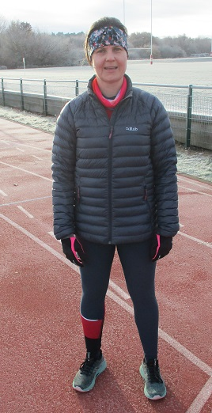

In the coldest conditions ever in the 35-year history of the current format of the club handicap race, Jane Morgan won the final race of the 2022 handicap series and just pipped Andrew Mead for the series trophy on tiebreak.
Both runners finished with six points but Jane's four scoring races were slightly better attended.
None of the other runners on the day were able to improve their scores sufficiently to contest the top three series placings, so Andrew finishes second and Lucy Wilkes held on to third.
Congratulations to Jane who, faced with the task of winning the final race to take the series trophy, ran her fastest time for five years in very cold conditions to win by ten seconds from Sam Znetyniak.
As night follows day, so the 2023 series will follow the conclusion of the 2022 series, and the first race will be on Sunday 29th January at 08:30 from the track. All are welcome.
The full details are here.